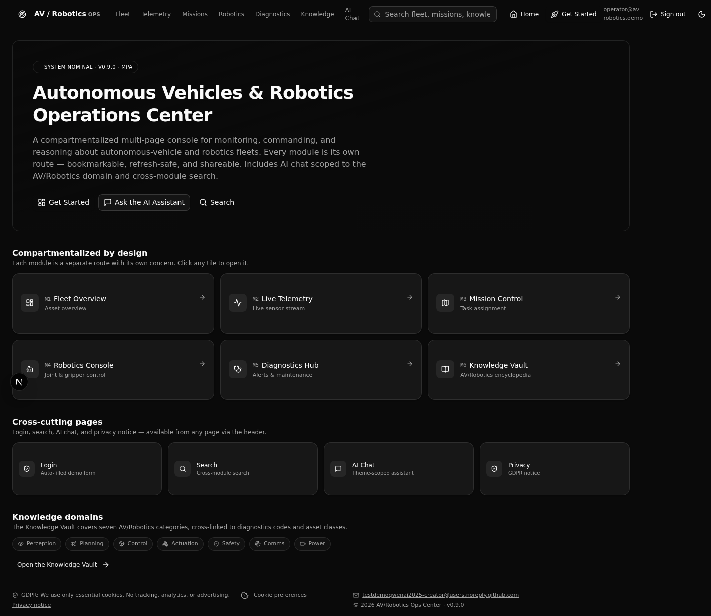
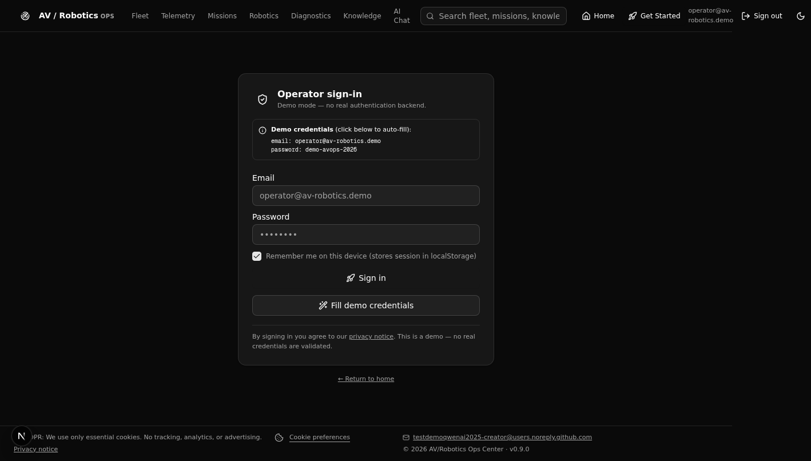
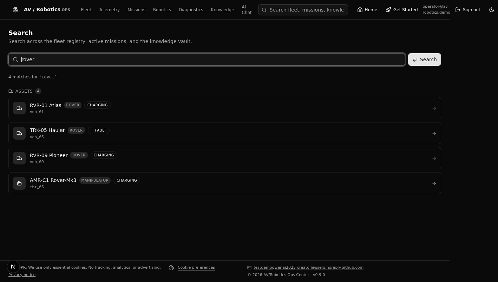
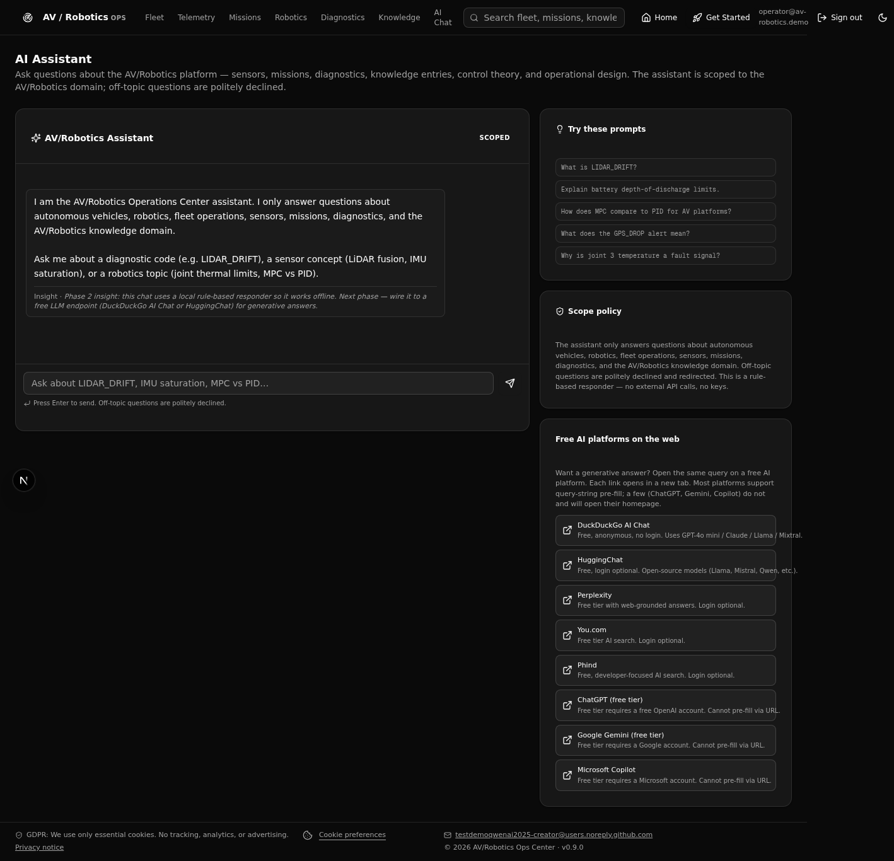
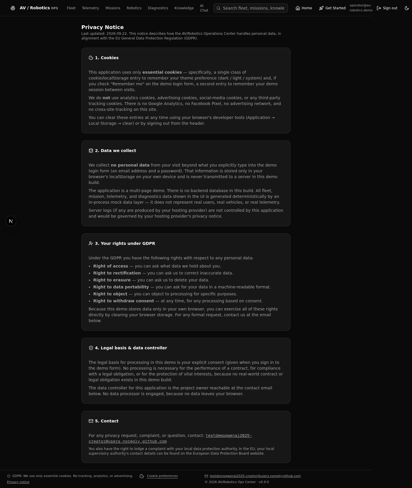

M1 · Fleet
Fleet Overview
KPI cards, filterable registry of every AV and robot, status breakdown donut.
A compartmentalized operations console for monitoring, commanding, and reasoning about autonomous-vehicle and robotics fleets — fleet overview, live telemetry at 5 Hz, mission control, joint-level robotics console, diagnostics, and an in-app knowledge vault.
RoboTrnsVchi
.
Every concern lives in exactly one compartment. Compartments communicate only through declared interfaces (typed stores, API routes, event emitters). This keeps the system testable, replaceable, and reviewable in isolation — and it means a real backend can be slotted in by replacing a single file.
Each module is a self-contained compartment. Click through the live application to see real-time telemetry, mission CRUD, joint nudge + animated schematic, alert acknowledgement, and cross-module asset selection.
KPI cards, filterable registry of every AV and robot, status breakdown donut.

5 Hz sensor stream across 7 sensor kinds, with threshold-based warn/fault coloring.

Kanban board with create / start / complete / cancel and waypoint detail.

Joint table with nudge controls, gripper state, animated 7-DoF SVG schematic.

Severity-sorted alerts, fleet-health radar, maintenance schedule with completion.

Searchable AV/Robotics encyclopedia with related-code / asset-class cross-navigation.
Phase 2 added four pages that cut across every module: a demo login with auto-filled credentials, cross-module search, a theme-scoped AI assistant, and a full GDPR privacy notice. The application is now a proper Multi-Page Application — every module is its own URL, bookmarkable and refresh-safe.

Hero, compartment map, and quick links to every module.

Auto-fill demo credentials, mock session via localStorage.

One box queries assets, missions, and the knowledge vault.

Answers AV/Robotics questions only; links to 8 free AI platforms.

Five-section GDPR notice: cookies, data, rights, legal basis, contact.
The platform is built on a modern TypeScript stack, chosen for type-safety, server-component ergonomics, and a path to production deployment.
RoboTrnsVchi
.
To request access or schedule a guided demo, contact the project owner.